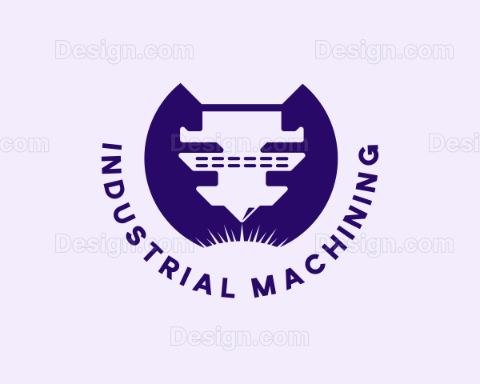
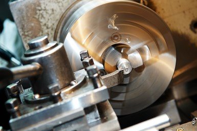
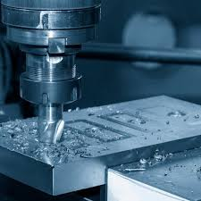
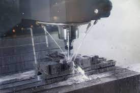

The manufacturing industry has greatly advanced with the development of technology, and one of the most notable modern techniques is the use of Computer Numerical Control (CNC) machines. This technology offers several benefits such as:
Regular maintenance and continuous training for operators are essential to ensure the continued optimal performance of machines. It is important for workers to receive training on how to properly operate and maintain the machines to avoid costly breakdowns.


